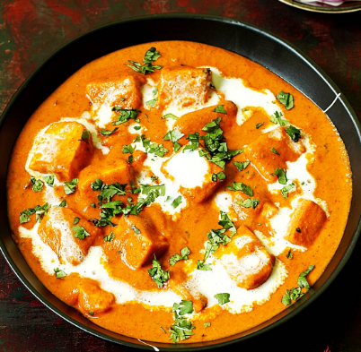

Let's learn making Butter

ButterPaneer is a delicious Indian dish made with paneer (cottage cheese) and butter.
Here are the ingredients you'll need:
- 200g paneer, cut into cubes
- 2 tbsp butter
- 1 onion, finely chopped
- 2 tomatoes, pureed
- 1 tsp ginger-garlic paste
- 1 tsp red chili powder
- 1/2 tsp turmeric powder
- 1 tsp garam masala
- Salt to taste
- 2 tbsp cream
Instructions:
- In a pan, heat butter and add chopped onions. Sauté until golden brown.
- Add ginger-garlic paste and sauté for a minute. Then add the tomato puree and cook until the oil separates.
- Add red chili powder, turmeric powder, and salt. Mix well.
- Add the paneer cubes and cook for 5-7 minutes on medium heat.
- Add garam masala and cream. Stir gently and cook for another 2-3 minutes.
- Serve hot with naan or rice.
Enjoy your creamy Butter Paneer!
Back to Home